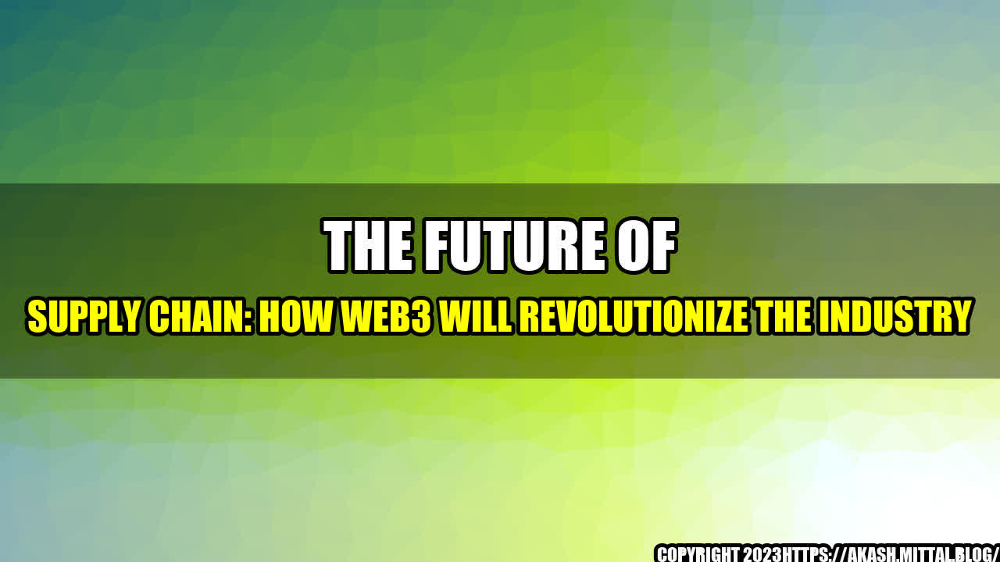

The Future of Supply Chain: How Web3 will revolutionize the industry

Imagine a world where you can trace the journey of your morning coffee from the bean to your cup, where every step of the supply chain is transparent and secure. This may sound like a pipe dream, but with Web3 technology, it could soon become a reality.
Web3, also known as the decentralized web, is the next evolution of the internet. It is built on blockchain technology, and is designed to be more secure, transparent, and decentralized than the current web. And it has the potential to completely transform the supply chain industry.

Examples of Web3 in Supply Chain
One of the key benefits of Web3 in supply chain is its ability to provide transparency and visibility throughout the entire process. Here are a few examples of how Web3 is already being used:
- IBM's Food Trust: This platform uses Web3 technology to allow food retailers and suppliers to trace the journey of food products from farm to table. This helps to ensure the safety and quality of food, and can help to prevent food-borne illnesses.
- Maersk's TradeLens: This platform uses Web3 technology to provide transparency and security in international trade by digitizing documentation and providing real-time visibility into the movement of goods.
- Walmart's Blockchain-based Traceability System: This system uses Web3 technology to track the journey of fresh produce from farm to store, providing consumers with greater transparency and confidence in the quality and safety of their food.
Web3 Benefits for Supply Chain
So, why is Web3 such a game-changer for supply chain? Here are a few key benefits:
- Transparency: Web3 allows for greater transparency and visibility throughout the entire supply chain. This means that consumers can have greater confidence in the safety and quality of products, and suppliers can more easily identify and fix issues.
- Security: Web3 is more secure than the current web, and is designed to be tamper-proof. This means that the data and transactions within the supply chain can be trusted and are less vulnerable to fraud or cyber attacks.
- Efficiency: By digitizing and automating many of the processes within the supply chain, Web3 can make the entire process more efficient and cost-effective.
Conclusion
Web3 is a revolutionary technology that has the potential to completely transform the supply chain industry. By providing greater transparency, security, and efficiency, Web3 can help to ensure the safety and quality of products, while also reducing costs and improving customer satisfaction. As with any new technology, there are challenges to be addressed, but the benefits are clear. If you haven't already, now is the time to start exploring how Web3 can help to improve your supply chain.
- References:
- Hashtags:
- #Web3
- #SupplyChain
- #Blockchain
- #Transparency
- #Security
- #Efficiency
- Category: Technology/Supply Chain
Curated by Team Akash.Mittal.Blog
Share on Twitter Share on LinkedIn